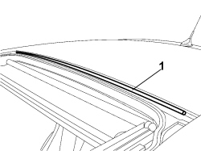

7030B51 SLIDING ROOF CENTRAL ANTI-WIND NOISE GASKET - R R
- Path
- Procedures > 70 FITTINGS > 7030 SUN ROOF/GLASS PANEL > 7030B SLIDING ROOF > 7030B51 SLIDING ROOF CENTRAL ANTI-WIND NOISE GASKET - R R
- Kind
- repair procedure (removal / refitting; the operation number is the code)
- Applies to
- all engines; all production periods
- Interactive page
- https://sloeber94.github.io/elrnDB-fCrm/en/#/194000987
Applies to: all engines; all production periods
 Removing
Removing
 Refitting
RefittingOp. 7030B18 SLIDING ROOF GLASS PANEL - R+R
1. Release the weatherstrip from its housing and remove it.

Applies to: all engines; all production periods
Applies to: all engines; all production periods
Refitting
Removing- Using suitable products, clean any residues of adhesive from the seal housing very thoroughly taking care not to scratch the paintwork.
- Extend a bead of silicone adhesive to the seal housing.
- Fit the seal for the transparent section and adjust it taking care to ensure that it fits exactly in the housing.